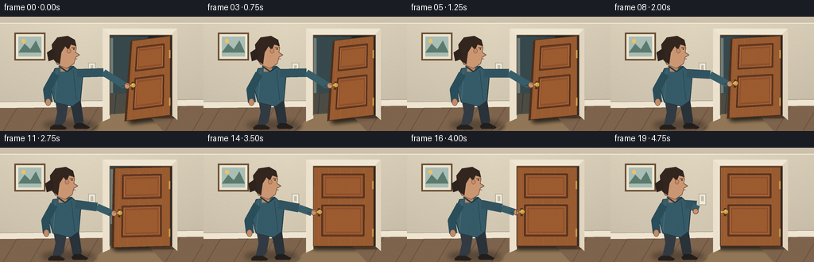
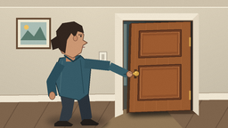
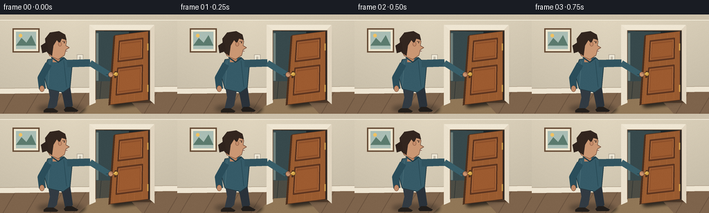

CODING AGENTS AS PIXEL WORLD MODELS
traex/GPT-5.6-Sol · motion_rationality_0041
点击播放 · 原生 RGB 像素
逐轮保存的候选
回放视频、检查图与代码变化。
每份候选均可单独播放。实际图片检查记录在下方工具轨迹中。
候选 01播放与检查图
点击播放 · 原生 RGB 像素

展开代码变化
--- 上一保存版本
+++ 本次保存版本
@@ -0,0 +1,216 @@
+from pathlib import Path
+import math
+import numpy as np
+from PIL import Image, ImageDraw, ImageFilter
+import artifact_io
+
+# Procedural, deterministic text-to-video illustration.
+W,H,N,S = 256,144,20,4
+SS=4
+rng=np.random.default_rng(41)
+
+def scp(points): return [(round(x*SS),round(y*SS)) for x,y in points]
+def box(b): return tuple(round(v*SS) for v in b)
+def line(d, pts, fill, width, joint='curve'):
+ d.line(scp(pts), fill=fill, width=max(1,round(width*SS)), joint=joint)
+def poly(d, pts, fill, outline=None, width=1):
+ d.polygon(scp(pts), fill=fill)
+ if outline: d.line(scp(pts+[pts[0]]), fill=outline, width=round(width*SS), joint='curve')
+def ell(d,b,fill,outline=None,width=1): d.ellipse(box(b),fill=fill,outline=outline,width=round(width*SS))
+def rect(d,b,fill,outline=None,width=1): d.rectangle(box(b),fill=fill,outline=outline,width=round(width*SS))
+def qmap(Q,u,v):
+ tl,tr,br,bl=Q
+ tx=tl[0]*(1-u)+tr[0]*u; ty=tl[1]*(1-u)+tr[1]*u
+ bx=bl[0]*(1-u)+br[0]*u; by=bl[1]*(1-u)+br[1]*u
+ return (tx*(1-v)+bx*v, ty*(1-v)+by*v)
+def qrect(Q,u0,v0,u1,v1): return [qmap(Q,u0,v0),qmap(Q,u1,v0),qmap(Q,u1,v1),qmap(Q,u0,v1)]
+def ease(x):
+ x=max(0,min(1,x)); return x*x*(3-2*x)
+def add_shadow(base, shapes, blur=4, opacity=80):
+ lay=Image.new('RGBA',base.size,(0,0,0,0)); d=ImageDraw.Draw(lay)
+ for kind,coords in shapes:
+ if kind=='poly': d.polygon(scp(coords), fill=(13,15,18,opacity))
+ elif kind=='ellipse': d.ellipse(box(coords),fill=(13,15,18,opacity))
+ lay=lay.filter(ImageFilter.GaussianBlur(blur*SS))
+ base.alpha_composite(lay)
+
+def render(fi):
+ # Supersampled warm evening interior
+ yy=np.arange(H*SS)[:,None]/SS
+ xx=np.arange(W*SS)[None,:]/SS
+ wall=np.empty((H*SS,W*SS,4),dtype=np.uint8)
+ # slight warm wall gradient/vignette
+ light=(1-0.10*yy/H-0.055*np.abs(xx-105)/180)
+ wall[:,:,0]=np.clip(226*light,0,255)
+ wall[:,:,1]=np.clip(215*light,0,255)
+ wall[:,:,2]=np.clip(192*light,0,255)
+ wall[:,:,3]=255
+ im=Image.fromarray(wall,'RGBA'); d=ImageDraw.Draw(im)
+
+ # far wall architectural details
+ rect(d,(0,0,256,8),(205,193,171,255))
+ line(d,[(0,8),(256,8)],(244,237,219,255),1)
+ # framed art on the left
+ rect(d,(18,20,57,55),(103,76,54,255))
+ rect(d,(20,22,55,53),(238,230,207,255))
+ rect(d,(23,25,52,50),(170,190,181,255))
+ poly(d,[(23,45),(31,34),(38,41),(45,30),(52,45)],(91,123,110,255))
+ ell(d,(27,28,32,33),(241,194,97,255))
+ # light switch
+ rect(d,(111,58,120,72),(239,233,216,255),(171,161,144,255),.7)
+ rect(d,(114,61,117,67),(196,188,171,255))
+
+ # floor and baseboard
+ poly(d,[(0,112),(256,109),(256,144),(0,144)],(126,100,76,255))
+ for x in range(-30,290,34): line(d,[(x,144),(x+20,110)],(104,81,61,255),.7)
+ line(d,[(0,113),(256,110)],(82,69,57,255),1)
+ poly(d,[(0,107),(256,104),(256,112),(0,115)],(238,229,210,255))
+ line(d,[(0,107),(256,104)],(174,158,136,255),1)
+
+ # doorway opening, recess and visible room beyond
+ rect(d,(132,18,221,128),(91,67,48,255)) # outer recess
+ rect(d,(137,23,216,124),(27,39,44,255))
+ # glimpsed cooler room through the gap
+ poly(d,[(138,24),(186,25),(181,120),(138,123)],(55,73,76,255))
+ poly(d,[(138,97),(185,96),(181,121),(138,123)],(76,76,68,255))
+ line(d,[(146,97),(144,122)],(45,51,51,255),.7)
+ # narrow illuminated far doorway edge
+ rect(d,(138,27,142,96),(109,126,122,255))
+ # ambient floor light from doorway
+ poly(d,[(137,123),(183,120),(205,144),(113,144)],(145,119,87,38))
+
+ # timing: hold open briefly, deliberate closing, settle shut
+ q=ease((fi-1)/15.0)
+ # door's free edge sweeps left, while hinge is fixed; skew resolves as it closes
+ tl=(166+(137-166)*q, 30+(24-30)*q)
+ bl=(159+(137-159)*q, 131+(124-131)*q)
+ tr=(214,24); br=(214,124)
+ Q=[tl,tr,br,bl]
+
+ # cast shadow that shrinks as door approaches the frame
+ shoff=4.5*(1-q)
+ add_shadow(im,[('poly',[(x+shoff,y+2) for x,y in Q])],blur=3,opacity=100)
+ d=ImageDraw.Draw(im)
+ # door side thickness on moving free edge
+ poly(d,[(tl[0]-2.2,tl[1]+1.5),tl,bl,(bl[0]-2.5,bl[1]+1)],(76,48,30,255))
+ # main oak face
+ poly(d,Q,(153,91,48,255),(78,48,31,255),1)
+ # subtle directional wood bands
+ for u in [0.08,0.25,0.44,0.63,0.84]:
+ a=qmap(Q,u,.02); b=qmap(Q,u,.98)
+ line(d,[a,b],(165,101,57,150),.45)
+ # stile/rail construction
+ for u0,v0,u1,v1 in [(.14,.09,.84,.39),(.14,.48,.84,.87)]:
+ outer=qrect(Q,u0,v0,u1,v1)
+ poly(d,outer,(112,63,36,255),(79,45,29,255),1.2)
+ inner=qrect(Q,u0+.035,v0+.025,u1-.035,v1-.025)
+ poly(d,inner,(143,81,43,255),(191,122,72,255),.8)
+ # panel central highlight
+ inn2=qrect(Q,u0+.07,v0+.055,u1-.07,v1-.055)
+ poly(d,inn2,(157,91,48,255))
+ # lit hinge slivers on right
+ for v in (.18,.78):
+ a=qmap(Q,.985,v); b=qmap(Q,.985,v+.10)
+ line(d,[a,b],(202,151,73,255),2.0)
+
+ # handle, fixed to free-side stile and moving rigidly with door
+ hc=qmap(Q,.105,.565)
+ # plate aligned approximately vertically
+ ptop=qmap(Q,.09,.52); pbot=qmap(Q,.09,.62)
+ line(d,[ptop,pbot],(77,49,30,255),3)
+ ell(d,(hc[0]-3.4,hc[1]-3.4,hc[0]+3.4,hc[1]+3.4),(207,157,67,255),(83,56,31,255),.8)
+ ell(d,(hc[0]-1.6,hc[1]-1.8,hc[0]+.2,hc[1]),(250,213,124,255))
+ # short lever points left, where the hand grips
+ lever_end=(hc[0]-6.5,hc[1]+.5)
+ line(d,[hc,lever_end],(218,171,77,255),2.3)
+
+ # frame/casing in foreground, emphasizing the destination plane
+ poly(d,[(129,15),(222,15),(222,22),(136,22),(136,128),(129,131)],(241,231,210,255))
+ # cut interior back over center; casing above/left/right explicitly
+ # Redraw only actual casing pieces because prior polygon is L shape
+ rect(d,(129,15,222,23),(239,230,211,255))
+ poly(d,[(129,15),(138,23),(138,128),(129,132)],(235,225,205,255))
+ poly(d,[(216,22),(223,15),(223,130),(216,124)],(225,213,192,255))
+ line(d,[(138,23),(138,124)],(105,82,63,255),1)
+ line(d,[(216,23),(216,124)],(89,67,51,255),1)
+ line(d,[(138,23),(216,23)],(122,96,72,255),1)
+
+ # Person: body subtly shifts backward while pulling the lever left.
+ bx=0-3.0*q
+ # grounding shadow
+ add_shadow(im,[('ellipse',(54+bx,130,121+bx,143))],blur=3,opacity=85)
+ d=ImageDraw.Draw(im)
+ # legs, rear then front
+ # back leg takes a small stabilizing step
+ poly(d,[(85+bx,103),(101+bx,103),(105+bx,132),(100+bx,138),(94+bx,136),(90+bx,116)],(42,50,58,255))
+ poly(d,[(69+bx,103),(87+bx,103),(82+bx,132),(75+bx,139),(68+bx,138),(72+bx,120)],(50,59,67,255))
+ # shoes
+ poly(d,[(67+bx,136),(77+bx,136),(84+bx,140),(82+bx,142),(63+bx,142),(63+bx,139)],(37,32,28,255))
+ poly(d,[(96+bx,134),(104+bx,134),(113+bx,139),(111+bx,141),(94+bx,141),(92+bx,138)],(34,30,27,255))
+ # torso silhouette, warm sweater
+ torso=[(69+bx,65),(92+bx,62),(104+bx,73),(101+bx,106),(91+bx,113),(69+bx,108),(62+bx,84)]
+ poly(d,torso,(54,91,104,255),(35,56,64,255),1)
+ # knit highlights
+ line(d,[(72+bx,68),(69+bx,104)],(76,112,121,255),.7)
+ line(d,[(92+bx,67),(96+bx,105)],(38,70,82,255),.7)
+ # left arm hangs naturally
+ line(d,[(70+bx,72),(59+bx,92),(61+bx,108)],(43,78,91,255),10)
+ ell(d,(57+bx,103,64+bx,112),(194,139,105,255),(104,69,51,255),.6)
+
+ # pulling arm: hand tracks the door handle exactly until the latch closes
+ shoulder=(97+bx,71)
+ # elbow bends inward as the door reaches the jamb
+ elbow=(130-10*q+bx*.25,70+6*q)
+ grip=(lever_end[0]-0.7,lever_end[1]+0.2)
+ if fi<=16:
+ # sleeve upper arm and forearm (long sleeve), with cuff and hand over lever
+ line(d,[shoulder,elbow],(49,84,96,255),11)
+ line(d,[elbow,(grip[0]-3,grip[1])],(56,94,105,255),9)
+ line(d,[(grip[0]-7,grip[1]),(grip[0]-2,grip[1])],(35,65,76,255),1)
+ ell(d,(grip[0]-4,grip[1]-3.8,grip[0]+3.2,grip[1]+3.8),(202,147,111,255),(106,70,52,255),.7)
+ # fingers curling around brass lever
+ line(d,[(grip[0]-1,grip[1]-2),(grip[0]+3,grip[1]-.6)],(128,83,61,255),.65)
+ else:
+ # after the latch seats, hand releases and retracts toward the chest
+ r=ease((fi-16)/3)
+ hand=(grip[0]*(1-r)+(110+bx)*r, grip[1]*(1-r)+80*r)
+ elbow2=(elbow[0]*(1-r)+(111+bx)*r, elbow[1]*(1-r)+72*r)
+ line(d,[shoulder,elbow2],(49,84,96,255),11)
+ line(d,[elbow2,(hand[0]-2,hand[1])],(56,94,105,255),9)
+ ell(d,(hand[0]-3.5,hand[1]-3.5,hand[0]+3.5,hand[1]+3.5),(202,147,111,255),(106,70,52,255),.7)
+
+ # neck and head in profile, looking toward the latch
+ rect(d,(76+bx,55,86+bx,69),(191,134,100,255))
+ # ear/back head and face profile with nose
+ face=[(68+bx,35),(79+bx,28),(91+bx,31),(96+bx,39),(95+bx,45),(100+bx,48),
+ (95+bx,51),(93+bx,59),(84+bx,65),(72+bx,60),(66+bx,50)]
+ poly(d,face,(203,151,115,255),(112,76,57,255),.7)
+ # hair cap and back locks
+ hair=[(66+bx,45),(65+bx,35),(72+bx,26),(85+bx,24),(94+bx,29),(96+bx,37),
+ (89+bx,35),(86+bx,42),(82+bx,37),(77+bx,45),(75+bx,60),(68+bx,55)]
+ poly(d,hair,(51,38,31,255))
+ # small ponytail gives a readable person silhouette
+ poly(d,[(68+bx,39),(59+bx,45),(61+bx,56),(70+bx,53)],(47,35,29,255))
+ # ear, eye and focused brow
+ ell(d,(84+bx,40,89+bx,46),(197,140,106,255),(120,78,57,255),.6)
+ line(d,[(90+bx,39),(94+bx,39)],(70,48,39,255),.8)
+ ell(d,(92+bx,40,93.4+bx,41.4),(37,31,28,255))
+ line(d,[(94+bx,53),(97+bx,53)],(132,75,68,255),.7)
+ # sweater collar
+ line(d,[(74+bx,62),(84+bx,69),(92+bx,63)],(31,61,72,255),2)
+
+ # final latch seam cue / small highlight only after closure
+ if q>.985:
+ line(d,[(138,24),(138,124)],(66,48,37,255),.75)
+
+ im=im.convert('RGB').resize((W,H),Image.Resampling.LANCZOS)
+ # very subtle film grain, identical strength each frame but deterministic
+ arr=np.asarray(im).astype(np.int16)
+ noise=rng.normal(0,0.55,arr.shape[:2])[:,:,None]
+ arr=np.clip(arr+noise,0,255).astype(np.uint8)
+ return arr
+
+frames=np.stack([render(i) for i in range(N)])
+assert frames.shape==(20,144,256,3) and frames.dtype==np.uint8
+artifact_io.save(frames, Path(__file__).resolve().parent)
+print('saved',frames.shape,frames.dtype)
可观测工具轨迹
实际执行的命令与返回图片。
命令 1exit 0
/bin/bash -lc "cat prompt.txt && printf '\\n---RULES---\\n' && cat GENERATION_RULES.md && printf '\\n---SPEC---\\n' && cat task_spec.json"
命令 2exit 0
/bin/bash -lc "find . -maxdepth 2 -type f -printf '%p %s bytes\\n' | sort && printf '\\nTools:\\n' && command -v ffmpeg || true && command -v python3 || true"
命令 3exit 0
/bin/bash -lc 'cat artifact_io.py'
命令 4exit 0
/bin/bash -lc "python3 - <<'PY'
try:
import PIL; print('PIL',PIL.__version__)
except Exception as e: print(e)
try:
import numpy; print('numpy',numpy.__version__)
except Exception as e: print(e)
PY"命令 5exit 0
/bin/bash -lc "cat > generate.py <<'PY'
from pathlib import Path
import math
import numpy as np
from PIL import Image, ImageDraw, ImageFilter
import artifact_io
# Procedural, deterministic text-to-video illustration.
W,H,N,S = 256,144,20,4
SS=4
rng=np.random.default_rng(41)
def scp(points): return [(round(x*SS),round(y*SS)) for x,y in points]
def box(b): return tuple(round(v*SS) for v in b)
def line(d, pts, fill, width, joint='curve'):
d.line(scp(pts), fill=fill, width=max(1,round(width*SS)), joint=joint)
def poly(d, pts, fill, outline=None, width=1):
d.polygon(scp(pts), fill=fill)
if outline: d.line(scp(pts+[pts[0]]), fill=outline, width=round(width*SS), joint='curve')
def ell(d,b,fill,outline=None,width=1): d.ellipse(box(b),fill=fill,outline=outline,width=round(width*SS))
def rect(d,b,fill,outline=None,width=1): d.rectangle(box(b),fill=fill,outline=outline,width=round(width*SS))
def qmap(Q,u,v):
tl,tr,br,bl=Q
tx=tl[0]*(1-u)+tr[0]*u; ty=tl[1]*(1-u)+tr[1]*u
bx=bl[0]*(1-u)+br[0]*u; by=bl[1]*(1-u)+br[1]*u
return (tx*(1-v)+bx*v, ty*(1-v)+by*v)
def qrect(Q,u0,v0,u1,v1): return [qmap(Q,u0,v0),qmap(Q,u1,v0),qmap(Q,u1,v1),qmap(Q,u0,v1)]
def ease(x):
x=max(0,min(1,x)); return x*x*(3-2*x)
def add_shadow(base, shapes, blur=4, opacity=80):
lay=Image.new('RGBA',base.size,(0,0,0,0)); d=ImageDraw.Draw(lay)
for kind,coords in shapes:
if kind=='poly': d.polygon(scp(coords), fill=(13,15,18,opacity))
elif kind=='ellipse': d.ellipse(box(coords),fill=(13,15,18,opacity))
lay=lay.filter(ImageFilter.GaussianBlur(blur*SS))
base.alpha_composite(lay)
def render(fi):
# Supersampled warm evening interior
yy=np.arange(H*SS)[:,None]/SS
xx=np.arange(W*SS)[None,:]/SS
wall=np.empty((H*SS,W*SS,4),dtype=np.uint8)
# slight warm wall gradient/vignette
light=(1-0.10*yy/H-0.055*np.abs(xx-105)/180)
wall[:,:,0]=np.clip(226*light,0,255)
wall[:,:,1]=np.clip(215*light,0,255)
wall[:,:,2]=np.clip(192*light,0,255)
wall[:,:,3]=255
im=Image.fromarray(wall,'RGBA'); d=ImageDraw.Draw(im)
# far wall architectural details
rect(d,(0,0,256,8),(205,193,171,255))
line(d,[(0,8),(256,8)],(244,237,219,255),1)
# framed art on the left
rect(d,(18,20,57,55),(103,76,54,255))
rect(d,(20,22,55,53),(238,230,207,255))
rect(d,(23,25,52,50),(170,190,181,255))
poly(d,[(23,45),(31,34),(38,41),(45,30),(52,45)],(91,123,110,255))
ell(d,(27,28,32,33),(241,194,97,255))
# light switch
rect(d,(111,58,120,72),(239,233,216,255),(171,161,144,255),.7)
rect(d,(114,61,117,67),(196,188,171,255))
# floor and baseboard
poly(d,[(0,112),(256,109),(256,144),(0,144)],(126,100,76,255))
for x in range(-30,290,34): line(d,[(x,144),(x+20,110)],(104,81,61,255),.7)
line(d,[(0,113),(256,110)],(82,69,57,255),1)
poly(d,[(0,107),(256,104),(256,112),(0,115)],(238,229,210,255))
line(d,[(0,107),(256,104)],(174,158,136,255),1)
# doorway opening, recess and visible room beyond
rect(d,(132,18,221,128),(91,67,48,255)) # outer recess
rect(d,(137,23,216,124),(27,39,44,255))
# glimpsed cooler room through the gap
poly(d,[(138,24),(186,25),(181,120),(138,123)],(55,73,76,255))
poly(d,[(138,97),(185,96),(181,121),(138,123)],(76,76,68,255))
line(d,[(146,97),(144,122)],(45,51,51,255),.7)
# narrow illuminated far doorway edge
rect(d,(138,27,142,96),(109,126,122,255))
# ambient floor light from doorway
poly(d,[(137,123),(183,120),(205,144),(113,144)],(145,119,87,38))
# timing: hold open briefly, deliberate closing, settle shut
q=ease((fi-1)/15.0)
# door's free edge sweeps left, while hinge is fixed; skew resolves as it closes
tl=(166+(137-166)*q, 30+(24-30)*q)
bl=(159+(137-159)*q, 131+(124-131)*q)
tr=(214,24); br=(214,124)
Q=[tl,tr,br,bl]
# cast shadow that shrinks as door approaches the frame
shoff=4.5*(1-q)
add_shadow(im,[('poly',[(x+shoff,y+2) for x,y in Q])],blur=3,opacity=100)
d=ImageDraw.Draw(im)
# door side thickness on moving free edge
poly(d,[(tl[0]-2.2,tl[1]+1.5),tl,bl,(bl[0]-2.5,bl[1]+1)],(76,48,30,255))
# main oak face
poly(d,Q,(153,91,48,255),(78,48,31,255),1)
# subtle directional wood bands
for u in [0.08,0.25,0.44,0.63,0.84]:
a=qmap(Q,u,.02); b=qmap(Q,u,.98)
line(d,[a,b],(165,101,57,150),.45)
# stile/rail construction
for u0,v0,u1,v1 in [(.14,.09,.84,.39),(.14,.48,.84,.87)]:
outer=qrect(Q,u0,v0,u1,v1)
poly(d,outer,(112,63,36,255),(79,45,29,255),1.2)
inner=qrect(Q,u0+.035,v0+.025,u1-.035,v1-.025)
poly(d,inner,(143,81,43,255),(191,122,72,255),.8)
# panel central highlight
inn2=qrect(Q,u0+.07,v0+.055,u1-.07,v1-.055)
poly(d,inn2,(157,91,48,255))
# lit hinge slivers on right
for v in (.18,.78):
a=qmap(Q,.985,v); b=qmap(Q,.985,v+.10)
line(d,[a,b],(202,151,73,255),2.0)
# handle, fixed to free-side stile and moving rigidly with door
hc=qmap(Q,.105,.565)
# plate aligned approximately vertically
ptop=qmap(Q,.09,.52); pbot=qmap(Q,.09,.62)
line(d,[ptop,pbot],(77,49,30,255),3)
ell(d,(hc[0]-3.4,hc[1]-3.4,hc[0]+3.4,hc[1]+3.4),(207,157,67,255),(83,56,31,255),.8)
ell(d,(hc[0]-1.6,hc[1]-1.8,hc[0]+.2,hc[1]),(250,213,124,255))
# short lever points left, where the hand grips
lever_end=(hc[0]-6.5,hc[1]+.5)
line(d,[hc,lever_end],(218,171,77,255),2.3)
# frame/casing in foreground, emphasizing the destination plane
poly(d,[(129,15),(222,15),(222,22),(136,22),(136,128),(129,131)],(241,231,210,255))
# cut interior back over center; casing above/left/right explicitly
# Redraw only actual casing pieces because prior polygon is L shape
rect(d,(129,15,222,23),(239,230,211,255))
poly(d,[(129,15),(138,23),(138,128),(129,132)],(235,225,205,255))
poly(d,[(216,22),(223,15),(223,130),(216,124)],(225,213,192,255))
line(d,[(138,23),(138,124)],(105,82,63,255),1)
line(d,[(216,23),(216,124)],(89,67,51,255),1)
line(d,[(138,23),(216,23)],(122,96,72,255),1)
# Person: body subtly shifts backward while pulling the lever left.
bx=0-3.0*q
# grounding shadow
add_shadow(im,[('ellipse',(54+bx,130,121+bx,143))],blur=3,opacity=85)
d=ImageDraw.Draw(im)
# legs, rear then front
# back leg takes a small stabilizing step
poly(d,[(85+bx,103),(101+bx,103),(105+bx,132),(100+bx,138),(94+bx,136),(90+bx,116)],(42,50,58,255))
poly(d,[(69+bx,103),(87+bx,103),(82+bx,132),(75+bx,139),(68+bx,138),(72+bx,120)],(50,59,67,255))
# shoes
poly(d,[(67+bx,136),(77+bx,136),(84+bx,140),(82+bx,142),(63+bx,142),(63+bx,139)],(37,32,28,255))
poly(d,[(96+bx,134),(104+bx,134),(113+bx,139),(111+bx,141),(94+bx,141),(92+bx,138)],(34,30,27,255))
# torso silhouette, warm sweater
torso=[(69+bx,65),(92+bx,62),(104+bx,73),(101+bx,106),(91+bx,113),(69+bx,108),(62+bx,84)]
poly(d,torso,(54,91,104,255),(35,56,64,255),1)
# knit highlights
line(d,[(72+bx,68),(69+bx,104)],(76,112,121,255),.7)
line(d,[(92+bx,67),(96+bx,105)],(38,70,82,255),.7)
# left arm hangs naturally
line(d,[(70+bx,72),(59+bx,92),(61+bx,108)],(43,78,91,255),10)
ell(d,(57+bx,103,64+bx,112),(194,139,105,255),(104,69,51,255),.6)
# pulling arm: hand tracks the door handle exactly until the latch closes
shoulder=(97+bx,71)
# elbow bends inward as the door reaches the jamb
elbow=(130-10*q+bx*.25,70+6*q)
grip=(lever_end[0]-0.7,lever_end[1]+0.2)
if fi<=16:
# sleeve upper arm and forearm (long sleeve), with cuff and hand over lever
line(d,[shoulder,elbow],(49,84,96,255),11)
line(d,[elbow,(grip[0]-3,grip[1])],(56,94,105,255),9)
line(d,[(grip[0]-7,grip[1]),(grip[0]-2,grip[1])],(35,65,76,255),1)
ell(d,(grip[0]-4,grip[1]-3.8,grip[0]+3.2,grip[1]+3.8),(202,147,111,255),(106,70,52,255),.7)
# fingers curling around brass lever
line(d,[(grip[0]-1,grip[1]-2),(grip[0]+3,grip[1]-.6)],(128,83,61,255),.65)
else:
# after the latch seats, hand releases and retracts toward the chest
r=ease((fi-16)/3)
hand=(grip[0]*(1-r)+(110+bx)*r, grip[1]*(1-r)+80*r)
elbow2=(elbow[0]*(1-r)+(111+bx)*r, elbow[1]*(1-r)+72*r)
line(d,[shoulder,elbow2],(49,84,96,255),11)
line(d,[elbow2,(hand[0]-2,hand[1])],(56,94,105,255),9)
ell(d,(hand[0]-3.5,hand[1]-3.5,hand[0]+3.5,hand[1]+3.5),(202,147,111,255),(106,70,52,255),.7)
# neck and head in profile, looking toward the latch
rect(d,(76+bx,55,86+bx,69),(191,134,100,255))
# ear/back head and face profile with nose
face=[(68+bx,35),(79+bx,28),(91+bx,31),(96+bx,39),(95+bx,45),(100+bx,48),
(95+bx,51),(93+bx,59),(84+bx,65),(72+bx,60),(66+bx,50)]
poly(d,face,(203,151,115,255),(112,76,57,255),.7)
# hair cap and back locks
hair=[(66+bx,45),(65+bx,35),(72+bx,26),(85+bx,24),(94+bx,29),(96+bx,37),
(89+bx,35),(86+bx,42),(82+bx,37),(77+bx,45),(75+bx,60),(68+bx,55)]
poly(d,hair,(51,38,31,255))
# small ponytail gives a readable person silhouette
poly(d,[(68+bx,39),(59+bx,45),(61+bx,56),(70+bx,53)],(47,35,29,255))
# ear, eye and focused brow
ell(d,(84+bx,40,89+bx,46),(197,140,106,255),(120,78,57,255),.6)
line(d,[(90+bx,39),(94+bx,39)],(70,48,39,255),.8)
ell(d,(92+bx,40,93.4+bx,41.4),(37,31,28,255))
line(d,[(94+bx,53),(97+bx,53)],(132,75,68,255),.7)
# sweater collar
line(d,[(74+bx,62),(84+bx,69),(92+bx,63)],(31,61,72,255),2)
# final latch seam cue / small highlight only after closure
if q>.985:
line(d,[(138,24),(138,124)],(66,48,37,255),.75)
im=im.convert('RGB').resize((W,H),Image.Resampling.LANCZOS)
# very subtle film grain, identical strength each frame but deterministic
arr=np.asarray(im).astype(np.int16)
noise=rng.normal(0,0.55,arr.shape[:2])[:,:,None]
arr=np.clip(arr+noise,0,255).astype(np.uint8)
return arr
frames=np.stack([render(i) for i in range(N)])
assert frames.shape==(20,144,256,3) and frames.dtype==np.uint8
artifact_io.save(frames, Path(__file__).resolve().parent)
print('saved',frames.shape,frames.dtype)
PY
python3 generate.py
ls -lh pixels.npz index.html inspection.png frames/00.png frames/19.png"命令 6exit 0
/bin/bash -lc "python3 - <<'PY'
import numpy as np, json
from pathlib import Path
z=np.load('pixels.npz')['pixels']
s=json.load(open('task_spec.json'))
assert z.shape==(s['height'],s['width'],s['frames'])
# unpack and report temporal activity
f=np.stack([((z>>16)&255),((z>>8)&255),(z&255)],-1).transpose(2,0,1,3).astype(np.uint8)
mad=np.abs(f[1:].astype(int)-f[:-1].astype(int)).mean((1,2,3))
changed=np.any(f[1:]"'!=f[:-1],axis=3).sum((1,2))
print('"'packed',z.shape,z.dtype,'frames',f.shape,f.dtype)
print('MAD',np.round(mad,2).tolist())
print('changed_px',changed.tolist())
print('all finite/in range:', f.min(),f.max())
assert all(Path(f'frames/{i:02d}.png').is_file() for i in range(20))
assert Path('index.html').stat().st_size>100000
print('output validation passed')
PY"视觉工具实际返回图片 1

视觉工具实际返回图片 2

视觉工具实际返回图片 3

保存候选 1 份；完成命令 6 次；可验证图片返回 3 张。原始 API 响应与完整日志保留在本地。